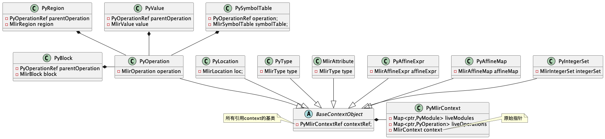

MLIRSharp
记录一下MLIRSharp的开发总结.
python bindings
python bindings提供了一个很好的参考例子, 通过tb-gen, mlir可以生成一个dialect的operations所对应的capi/py文件(前提是这个operations必须是通过ods来定义的), 以及pass的capi.
1. context管理
python中对于mlircontext做了复杂的包装, 需要详细的了解我才能知道在csharp中应该如何实现.
这里是PyMlirContext的类定义:
class PyMlirContext {
public:
PyMlirContext() = delete;
PyMlirContext(const PyMlirContext &) = delete;
PyMlirContext(PyMlirContext &&) = delete;
/// For the case of a python __init__ (py::init) method, pybind11 is quite
/// strict about needing to return a pointer that is not yet associated to
/// an py::object. Since the forContext() method acts like a pool, possibly
/// returning a recycled context, it does not satisfy this need. The usual
/// way in python to accomplish such a thing is to override __new__, but
/// that is also not supported by pybind11. Instead, we use this entry
/// point which always constructs a fresh context (which cannot alias an
/// existing one because it is fresh).
static PyMlirContext *createNewContextForInit();
/// Returns a context reference for the singleton PyMlirContext wrapper for
/// the given context.
static PyMlirContextRef forContext(MlirContext context);
~PyMlirContext();
/// Accesses the underlying MlirContext.
MlirContext get() { return context; }
/// Gets a strong reference to this context, which will ensure it is kept
/// alive for the life of the reference.
PyMlirContextRef getRef() {
return PyMlirContextRef(this, pybind11::cast(this));
}
/// Gets a capsule wrapping the void* within the MlirContext.
pybind11::object getCapsule();
/// Creates a PyMlirContext from the MlirContext wrapped by a capsule.
/// Note that PyMlirContext instances are uniqued, so the returned object
/// may be a pre-existing object. Ownership of the underlying MlirContext
/// is taken by calling this function.
static pybind11::object createFromCapsule(pybind11::object capsule);
/// Gets the count of live context objects. Used for testing.
static size_t getLiveCount();
/// Gets the count of live operations associated with this context.
/// Used for testing.
size_t getLiveOperationCount();
/// Clears the live operations map, returning the number of entries which were
/// invalidated. To be used as a safety mechanism so that API end-users can't
/// corrupt by holding references they shouldn't have accessed in the first
/// place.
size_t clearLiveOperations();
/// Gets the count of live modules associated with this context.
/// Used for testing.
size_t getLiveModuleCount();
/// Enter and exit the context manager.
pybind11::object contextEnter();
void contextExit(const pybind11::object &excType,
const pybind11::object &excVal,
const pybind11::object &excTb);
/// Attaches a Python callback as a diagnostic handler, returning a
/// registration object (internally a PyDiagnosticHandler).
pybind11::object attachDiagnosticHandler(pybind11::object callback);
/// Controls whether error diagnostics should be propagated to diagnostic
/// handlers, instead of being captured by `ErrorCapture`.
void setEmitErrorDiagnostics(bool value) { emitErrorDiagnostics = value; }
struct ErrorCapture;
private:
PyMlirContext(MlirContext context);
// Interns the mapping of live MlirContext::ptr to PyMlirContext instances,
// preserving the relationship that an MlirContext maps to a single
// PyMlirContext wrapper. This could be replaced in the future with an
// extension mechanism on the MlirContext for stashing user pointers.
// Note that this holds a handle, which does not imply ownership.
// Mappings will be removed when the context is destructed.
using LiveContextMap = llvm::DenseMap<void *, PyMlirContext *>;
static LiveContextMap &getLiveContexts();
// Interns all live modules associated with this context. Modules tracked
// in this map are valid. When a module is invalidated, it is removed
// from this map, and while it still exists as an instance, any
// attempt to access it will raise an error.
using LiveModuleMap =
llvm::DenseMap<const void *, std::pair<pybind11::handle, PyModule *>>;
LiveModuleMap liveModules;
// Interns all live operations associated with this context. Operations
// tracked in this map are valid. When an operation is invalidated, it is
// removed from this map, and while it still exists as an instance, any
// attempt to access it will raise an error.
using LiveOperationMap =
llvm::DenseMap<void *, std::pair<pybind11::handle, PyOperation *>>;
LiveOperationMap liveOperations;
bool emitErrorDiagnostics = false;
MlirContext context;
friend class PyModule;
friend class PyOperation;
};接下来根据几个在python中实际的场景进行讲解.
1.1 构造context
这里其实是给用户两个选择来管理context, 也可以通过with的方式来管理context. 总的来说就是只要构造了一个context就必然会把底层alloc出来的context指针存放到LiveModuleMap中. 当使用with语法的时候, 会调用__enter__函数将当前的context作为current.
ctx1 = Context()
try:
curr = Context.current
except:
print("no current")
print("live:", Context._get_live_count())
with Context() as ctx2:
print(Context.current)
print("live:", Context._get_live_count())TEST: testInsertionPointEnterExit
no current
live: 1
<mlir._mlir_libs._site_initialize.<locals>.Context object at 0x100a05400>
live: 21.2 location/insert point
ctx1 = Context()
with Location.unknown(ctx1) as loc1:
assert Context.current is ctx1
assert Location.current is loc1
m = Module.create(Location.unknown(ctx1))
ip = InsertionPoint(m.body)
with ip:
assert InsertionPoint.current is ip这里的location/以及insert point同样调用的是默认的push方式, 维护了一个存储context/insertionPoint/location的栈, 如果在新的scope中, context不变的话可以
void PyThreadContextEntry::push(FrameKind frameKind, py::object context,
py::object insertionPoint,
py::object location) {
auto &stack = getStack();
stack.emplace_back(frameKind, std::move(context), std::move(insertionPoint),
std::move(location));
// If the new stack has more than one entry and the context of the new top
// entry matches the previous, copy the insertionPoint and location from the
// previous entry if missing from the new top entry.
if (stack.size() > 1) {
auto &prev = *(stack.rbegin() + 1);
auto ¤t = stack.back();
if (current.context.is(prev.context)) {
// Default non-context objects from the previous entry.
if (!current.insertionPoint)
current.insertionPoint = prev.insertionPoint;
if (!current.location)
current.location = prev.location;
}
}
}1.3 block/operation管理
这里应该算是最复杂的部分, 主要问题就是在mlir的内部实现中, operation以及记录了他内部的block等信息, 但是在other language binding的时候, 是不知道内部已经记录了这些内容. 比如如果我使用safe handle去实现operation/block的时候, 此时operation可以get block, 拿到他内部的block, 但是如果直接通过调用extern的函数来获得这个block, 对于charp来说他会是一个新的block对象. 也就是如果使用charp的block去构造operation, 再通过operation去获取block, 拿到的block并不是原来block对象.
我觉得可以有两个解决方法:
- 在csharp的类中再维护一套引用的关系, 保证优先返回csharp中已经构造好的对象.
- 在构造csharp类的时候区分好是新创建还是引用创建, 然后为csharp的对象重写比较, 只需要handle相同就是相等的. 但是这样每次都重新创建了csharp的类不知道会不会有隐藏的问题.
先看看python binding的数据关系处理: 
1.4 python wrapper
在python中,对于context又做了一层包装, 也就是每个context构造的时候都直接加载所有的dialect了.
def _site_initialize():
import importlib
import itertools
import logging
from ._mlir import ir
logger = logging.getLogger(__name__)
registry = ir.DialectRegistry()
post_init_hooks = []
def process_initializer_module(module_name):
try:
m = importlib.import_module(f".{module_name}", __name__)
except ModuleNotFoundError:
return False
except ImportError:
message = (
f"Error importing mlir initializer {module_name}. This may "
"happen in unclean incremental builds but is likely a real bug if "
"encountered otherwise and the MLIR Python API may not function."
)
logger.warning(message, exc_info=True)
logger.debug("Initializing MLIR with module: %s", module_name)
if hasattr(m, "register_dialects"):
logger.debug("Registering dialects from initializer %r", m)
m.register_dialects(registry)
if hasattr(m, "context_init_hook"):
logger.debug("Adding context init hook from %r", m)
post_init_hooks.append(m.context_init_hook)
return True
# If _mlirRegisterEverything is built, then include it as an initializer
# module.
process_initializer_module("_mlirRegisterEverything")
# Load all _site_initialize_{i} modules, where 'i' is a number starting
# at 0.
for i in itertools.count():
module_name = f"_site_initialize_{i}"
if not process_initializer_module(module_name):
break
class Context(ir._BaseContext):
def __init__(self, *args, **kwargs):
super().__init__(*args, **kwargs)
self.append_dialect_registry(registry)
for hook in post_init_hooks:
hook(self)
# TODO: There is some debate about whether we should eagerly load
# all dialects. It is being done here in order to preserve existing
# behavior. See: https://github.com/llvm/llvm-project/issues/56037
self.load_all_available_dialects()
ir.Context = Context
class MLIRError(Exception):
"""
An exception with diagnostic information. Has the following fields:
message: str
error_diagnostics: List[ir.DiagnosticInfo]
"""
def __init__(self, message, error_diagnostics):
self.message = message
self.error_diagnostics = error_diagnostics
super().__init__(message, error_diagnostics)
def __str__(self):
s = self.message
if self.error_diagnostics:
s += ":"
for diag in self.error_diagnostics:
s += (
"\nerror: "
+ str(diag.location)[4:-1]
+ ": "
+ diag.message.replace("\n", "\n ")
)
for note in diag.notes:
s += (
"\n note: "
+ str(note.location)[4:-1]
+ ": "
+ note.message.replace("\n", "\n ")
)
return s
ir.MLIRError = MLIRError2. attributes构造
官方在pybind11中是通过CTRP的方式构造了一个注册attribute的基类, 然后给每个类继承CTRP之后再注册. 但是在csharp binding中缺少了中间的c++ wrapper, 所以必须要直接在csharp中实现.
观察了一下所有的attribute都有mlirAttributeIsAXXX,以及mlirXXXAttrGet的构造函数, 同时部分还具有mlirXXXAttrGetTypeID的方法. 看了一下python binding的实现, 基本上是通过在Globals中记录了type id与activator的映射, 然后在python的某些机制中自动调用down cast方法实现转换.
不过我比较疑惑的是attribute怎么没有destroy的接口, 那种数组的属性所使用的内存何时释放是个问题.
/// Checks whether the given attribute is a bool attribute.
MLIR_CAPI_EXPORTED bool mlirAttributeIsABool(MlirAttribute attr);
/// Creates a bool attribute in the given context with the given value.
MLIR_CAPI_EXPORTED MlirAttribute mlirBoolAttrGet(MlirContext ctx, int value);
// auto cast to Concrete type
.def(MLIR_PYTHON_MAYBE_DOWNCAST_ATTR, [](PyAttribute &self) {
MlirTypeID mlirTypeID = mlirAttributeGetTypeID(self);
assert(!mlirTypeIDIsNull(mlirTypeID) &&
"mlirTypeID was expected to be non-null.");
std::optional<pybind11::function> typeCaster =
PyGlobals::get().lookupTypeCaster(mlirTypeID,
mlirAttributeGetDialect(self));
if (!typeCaster)
return py::cast(self);
return typeCaster.value()(self);
});# TODO: Auto-generated. Audit and fix.
class TypeAttr(Attribute):
def __init__(self, cast_from_attr: Attribute) -> None: ...
@staticmethod
def get(*args, **kwargs) -> Any: ...
@staticmethod
def isinstance(arg: Any) -> bool: ...
@property
def type(self) -> Type: ...
@property
def value(self) -> Type: ...
# TODO: Auto-generated. Audit and fix.
class UnitAttr(Attribute):
def __init__(self, cast_from_attr: Attribute) -> None: ...
@staticmethod
def get(*args, **kwargs) -> Any: ...
@staticmethod
def isinstance(arg: Any) -> bool: ...
@property
def type(self) -> Type: ...
class StringAttr(Attribute):
def __init__(self, cast_from_attr: Attribute) -> None: ...
@staticmethod
def get(*args, **kwargs) -> Any: ...
@staticmethod
def get_typed(*args, **kwargs) -> Any: ...
@staticmethod
def isinstance(arg: Any) -> bool: ...
@property
def type(self) -> Type: ...
@property
def value(self) -> str: ...